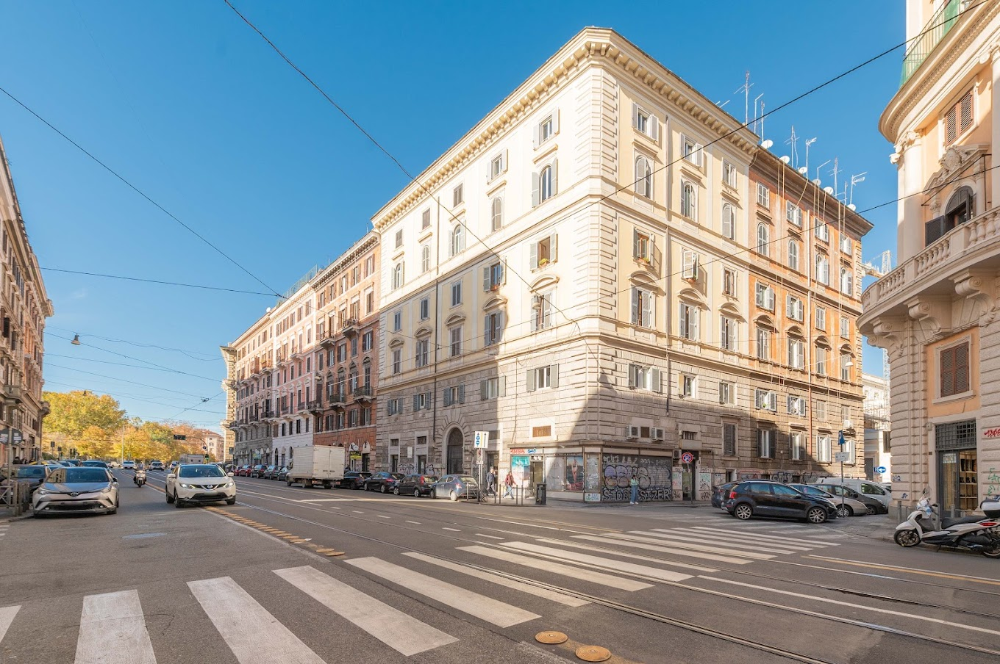

Location
A convenient base for exploring Rome and moving around the city.
ROME · ESQUILINO
A comfortable stay in Rome, designed for up to four guests. Discover Venusia and everything you need for your time in the city.
Discover Venusia ↓
VENUSIA
Venusia Luxury Colosseo is a welcoming apartment in central Rome, carefully furnished with modern comforts and attention to detail throughout every room.
Located on the fourth floor of an early 20th-century building with elevator, the apartment accommodates up to four guests with a double bed in the bedroom and a comfortable sofa bed in the living area.
Guests have the entire apartment to themselves, with a fully equipped kitchen, air conditioning, Wi-Fi and everything needed for a comfortable and independent stay in Rome.
Piazza Vittorio Emanuele II, Metro Line A and the Colosseum are all within easy reach, making Venusia an ideal base for exploring the city.


WHY VENUSIA
A convenient base for exploring Rome and moving around the city.
A welcoming space with the essentials for a comfortable stay.
An entire apartment for up to four guests, with room to feel at home.
Stay connected to the city while enjoying your own space and independence.
AMENITIES
Venusia is fully equipped for a comfortable stay, whether you are visiting Rome for a few days or staying a little longer.

ROME OUTSIDE YOUR DOOR
Venusia is located near Piazza Vittorio Emanuele II, in a lively and well-connected area of central Rome. Metro Line A is only a short walk away, while buses stop close to the building.
From here, Termini Station, the historic centre and many of Rome's most famous landmarks are easy to reach.
OUR RECOMMENDATIONS
Our personal recommendations for enjoying Rome, from breakfast and gelato near Venusia to Roman cuisine, pizza and favourite stops around the city's main sights.
Our go-to supermarket for groceries and everyday essentials. It is located on the same street as Venusia, about 100 metres away on foot.
Via Principe Eugenio 109 View on Maps ↗ NEAR VENUSIA · PASTRY & COFFEEA true Roman institution for pastries, with an adjoining café. A wonderful choice for breakfast or a sweet break.
Via dello Statuto 60 View on Maps ↗ NEAR VENUSIA · A ROMAN CLASSICOne of Rome's historic gelaterias, serving artisan gelato since 1880 and located on the same street as Venusia.
Via Principe Eugenio 65/67 View on Maps ↗ NEAR VENUSIA · BREAKFASTOne of our favourite places for breakfast. Bakery, pastries and coffee in the heart of the Esquilino neighbourhood.
Via Merulana 54 View on Maps ↗ NEAR VENUSIA · ROMAN CUISINEAn excellent nearby choice for traditional Roman cuisine and some of the city's classic dishes.
Via Germano Sommeiller 19 View on Maps ↗ NEAR VENUSIA · PIZZA & DINNERPractically on Venusia's doorstep. A convenient choice for good pizza, Roman dishes and an easy dinner nearby.
Via Cairoli 62 View on Maps ↗ NEAR VENUSIA · CHINESE CUISINEOne of our favourite choices for Chinese food, located on Via Principe Eugenio, just opposite the Fassi area.
Via Principe Eugenio 82 View on Maps ↗ NEAR THE COLOSSEUM · PIZZAA great choice for pizza close to the Colosseum, perfect after exploring the archaeological area.
Via dei Santi Quattro 24 View on Maps ↗ NEAR THE COLOSSEUM · LUNCHA favourite lunch stop close to the Colosseum. Antonio serves an excellent carbonara and traditional Roman dishes.
Via delle Terme di Tito 96 View on Maps ↗ NEAR THE VATICAN · ROMAN CUISINEOne of our favourites near the Vatican for typical Roman food, a lively atmosphere and warm, friendly service.
Via Leone IV 60 View on Maps ↗ HISTORIC CENTRE · MARKETOne of Rome's most famous historic squares and a classic stop while exploring the heart of the city.
Campo de' Fiori View on Maps ↗ HISTORIC CENTRE · ROMAN PIZZAA historic Roman pizzeria that we love, known for its thin Roman-style pizza in the heart of the historic centre.
Via del Governo Vecchio 114 View on Maps ↗GETTING HERE
Venusia is located at Via Principe Eugenio 40, in central Rome. Here you can find the easiest ways to reach us from the airports, Roma Termini Station or by car.
There are three main ways to reach Venusia from Rome Fiumicino Airport.
If you choose the train or shuttle bus, you will arrive at Roma Termini Station. From there, Venusia can be reached on foot, by bus or by Metro.
See directions from Termini ↓The journey from Ciampino Airport to Venusia usually takes around one hour.
One of the easiest options is to take a shuttle bus from Ciampino Airport to Roma Termini Station and continue to Venusia from there.
Check shuttle bus ↗Once you arrive at Roma Termini, follow the directions in the section below.
See directions from Termini ↓Venusia is close to Roma Termini Station and can be reached in three different ways.
Rome, Italy
Detailed access and self check-in instructions will be sent privately before your arrival.
If you are arriving by car, several parking options are available around Venusia.
Venusia does not have a private or reserved parking space. Street parking and private garages are available in the surrounding area.
Blue-line parking spaces are available in the surrounding streets and are subject to a fee.
Approx. €8 per dayWhite-line parking spaces may also be available and are generally free where parking is permitted.
A private garage is located approximately 100 metres from the apartment.
Approx. €35 per dayParking and transport prices are indicative and may change over time.
Rome's public transport network includes Metro, buses and trams. Several ticket options are available depending on the length of your stay.
Valid for 100 minutes from first validation.
Unlimited travel for 24 hours from first validation.
Unlimited travel for 48 hours from first validation.
Unlimited travel for 72 hours from first validation.
Unlimited travel for seven days, according to the validity rules of the weekly pass.
Tickets and passes can be purchased from Metro ticket machines and many authorised newsstands, bars and tobacco shops.
Fares shown here are based on the current public transport rates and may change over time.
DURING YOUR STAY
We want your stay at Venusia to be as easy and comfortable as possible. Here you will find the most useful information for your time in Rome.
Self check-in is available 24 hours a day, so late arrivals are not a problem. Detailed access instructions are sent privately before arrival.
Please follow the simple departure instructions provided in the check-out section below.
When you arrive at Venusia, you will find a small welcome kit prepared to make the beginning of your stay easier.
Coffee, tea and sugar will be waiting for you in the apartment.
Kitchen roll, new sponges, cleaning products and dishwasher tablets are provided.
Soap, shampoo, shower gel and toilet paper are available when you arrive.
The apartment is prepared with clean linen and a clean sofa cover.
A few simple rules help us keep Venusia comfortable for our guests and respectful of everyone living in the building.
Please always make sure that both elevator doors are completely closed after use.
This is very important for the correct operation of the lift and for the other residents of the building.
Venusia is a strictly non-smoking apartment. Smoking is not permitted inside the property.
Italian regulations require accommodation providers to collect identification details for all guests.
Please complete the guest registration form using the private link that will be sent to you before or shortly after your arrival.
The registration link contains information intended only for confirmed guests and will therefore not be published on this website.
Rome is a large and busy city, so a few simple precautions can make your stay more comfortable.
Keep an eye on bags, phones and personal belongings when travelling on buses, the Metro or in crowded areas.
When you are inside the apartment, especially at night, we recommend locking the entrance door.
Check-out is by 10:00 AM. Before leaving Venusia, we kindly ask you to follow a few simple steps.
Please switch off the lights and the air conditioning before leaving.
Rubbish can be placed in the bins located on the street, directly opposite the main entrance of the building.
Please remember to leave the apartment keys on the table before you go.
If you enjoyed your time at Venusia, we would be very grateful if you shared your experience with a review on Airbnb. Your feedback means a lot to us and helps future guests choose Venusia with confidence.
Thank you for choosing Venusia. We hope you had a wonderful stay in Rome and wish you a safe journey home.
EXPLORE ROME
From Venusia you can easily reach some of Rome's most iconic places, either on foot or by Metro. Here are a few simple directions and useful links.
The Colosseum is approximately 700 metres from Venusia and can easily be reached on foot.
Leave the building and turn left. After approximately 150 metres, turn right onto Viale Manzoni.
Continue towards the Colosseum and the archaeological area.
Official Colosseum tickets are released 30 days before the date of the visit. We recommend booking through the official archaeological park website only.
The Vatican area is easy to reach from Venusia using Metro Line A.
Take Metro Line A from Vittorio Emanuele in the direction of Battistini.
Get off at Ottaviano – S. Pietro and continue on foot towards St. Peter's Square or the Vatican Museums.
For the Vatican Museums and Sistine Chapel, always use the official Vatican Museums ticketing website.
A few more places worth adding to your time in Rome.
One of Rome's great basilicas and one of the closest major landmarks to Venusia.
Directions ↗A charming neighbourhood close to the Colosseum, full of small streets, restaurants and bars.
Directions ↗One of Rome's most famous landmarks and an essential stop while exploring the historic centre.
Directions ↗FROM OUR GUESTS
A few excerpts from recent 5-star Airbnb reviews.
“This is my 2nd time staying here. The apartment is great — comfortable bed and the floor plan separates the bedroom from the living room. Easy walk to the Colosseum.”
“The apartment is very clean and just enough space for a family of 4. The sofa bed is also quite comfortable.”
“Lovely place, had everything we needed! So close to the centre, metro and station. Really enjoyed our stay and would definitely recommend!”
WE ARE HERE FOR YOU
If you need information or assistance before or during your stay, you can contact us directly.
Via Principe Eugenio 40
Rome, Italy
From 3:00 PM
Self check-in available 24/7
By 10:00 AM